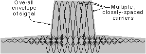

EEE317 Principles of Communications
| DMB | ||||||||
| - an overview of the DMB system, and in particular the T-DMB version for mobile video broadcasts. | ||||||||
|
Digital Multimedia broadcasting (DMB) is based on the Eureka 147 Digital Audio Broadcast (DAB) system which is widely deployed in the UK and many other countries around the world. One of the advantages of using DMB is that it could be rolled out and used without much modification, simply increasing the level of error correction to cope with the mobile environment. Eureka 147 allows for broadcasts from both terrestrial transmitters and satellite based transmitters. For DMB both platforms are also possible, but in view of the differing transmission requirements between the two systems, some modifications would be needed. For terrestrial based transmissions a flavour of the system designated as T-DMB (Terrestrial Digital Multimedia Broadcasting) is used, whereas for satellite broadcasting S-DMB (Satellite Digital Multimedia Broadcasting) is used.
|
||||||||
| RF signal characteristics | ||||||||
Like many other broadcasting systems, DMB and DAB use a form of transmission known as Orthogonal Frequency Division Multiplex (OFDM). This has been adopted because of its high data capacity and suitability for applications such as broadcasting. It also offers a high resilience to interference, can tolerate multi-path effects and is able to offer the possibility of a single frequency network, SFN. Orthogonal Frequency Division Multiplex (OFDM) is a form of modulation which uses a large number of closely spaced carriers that are modulated with low rate data. These signals would normally be expected to interfere with each other, but by making the signals orthogonal by choosing the carrier spacing carefully, interference can be avoided. For this to occur, the carrier spacing must be equal to the reciprocal of the symbol period. When a particular signal is demodulated, the adjacent carriers will contain a whole number of cycles in each symbol period and their contribution will sum to zero.
 OFDM Spectrum The data to be transmitted is split across all the carriers and this means that by using error correction techniques, if some of the carriers are lost due to multi-path effects, then the data can be reconstructed. Additionally having data carried at a low rate across all the carriers means that the effects of reflections and inter-symbol interference can be overcome. It also means that single frequency networks, where all transmitters can transmit on the same channel can be implemented. For more information on OFDM refer to Radio-Electronics.Com
|
||||||||
| DMB format | ||||||||
The transmissions for the form of DAB being deployed in many countries occupy approximately 1.5 MHz bandwidth and for the VHF broadcasts the transmission contains 1536 Carriers. However it is possible to use a variety of modes:
|
||||||||
| Frequency allocations | ||||||||
It would be possible to utilise the DAB transmission system within the UK, however much of the capacity has already been taken up, although some reserve capacity has been retained for future data transmissions of which DMB could be part. A more likely solution is to use frequencies within the L-Band DAB allocation (1452 - 1467.5 MHz), which in some countries would require little legislation. By using a new band it will not only be possible to use smaller antennas, an important element for mobile phones and PDAs, but it will also be possible to tailor the transmission to accommodate the Doppler shifts likely to be encountered by small mobile devices. This can be achieved by reducing the number of carriers. Despite the carrier number reduction, the maximum data rate of 1.152 Mbps is still retained. The drawback of using the L band frequencies is that they would require a much higher density of transmitters to provide the required coverage.
|
||||||||
| Battery consumption | ||||||||
One of the major requirements for any mobile video system is that it shall not place a major load on the battery of the handheld device. With user expectations requiring that battery life shall be several days between recharges, this is a major consideration. While battery technology is improving, and IC technology has enabled power consumption of chips to be reduced, basic technology can also play its part. DAB inherently includes a technique known as time slicing by using a Time Division Multiplexing delivery method. In this way the receiver is only switched on when it is required, thereby saving battery power. This makes DMB (which is based on DAB) particular suited to the delivery of material to handheld devices. |